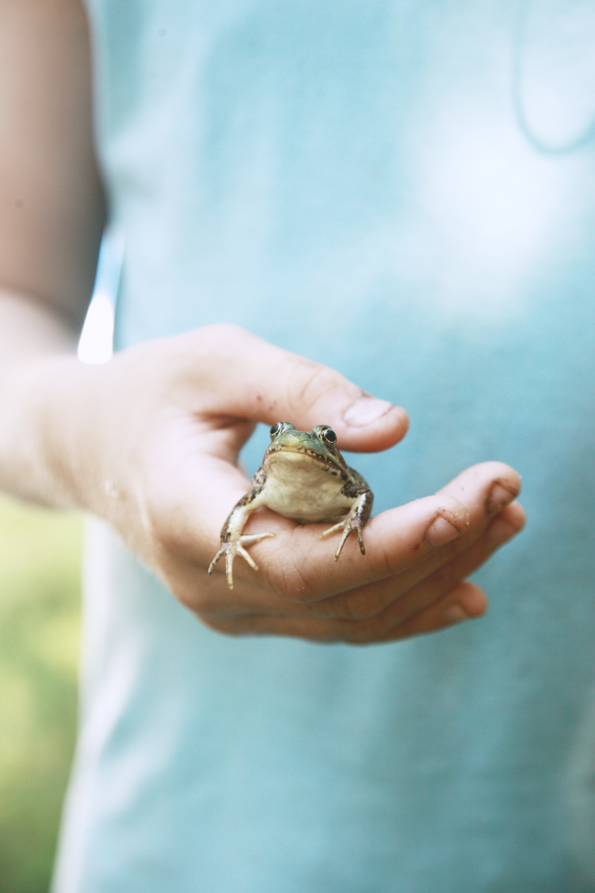

front-end dev wanna be
Početak mog zaposlenja je bio 27.12.2016 na Odjelu internističkog hitnog prijama, gdje sam proveo 4 mjeseca, a kasnije jednim navratom došao u ispomoć na dva mjeseca zbog potreba službe. Nakon što mi se ukazala prilika za premještaj na Odjel transfuzijske medicine to sam prihvatio. U 11 mj. 2020 bio sam mobiliziran na covid odjel, gdje sam radio do 1. mj 2021 do svog povratka na Odjel za transfuzijsku medicinu.
Rođen sam u Varaždinu 25.10.1995, pohađao sam IV. osnovnu školu, potom Medicinsku školu Varaždin. Kroz svoje odrastanje dosta vremena sam provodio za računalom igrajući igrice gdje se pojavila prva zainteresiranost za informatiku. Taj hobi se zadržao do današnjeg dana samo u manjem obujmu vremena. Iako je moje prvo mjesto zaposlenja bilo u Hitnoj internističkoj ambulanti, više sam se pronašao na Odjelu transfuzijske medicine. Obzirom na prirodu posla na tom odjelu susretao sam se s više informacijskih sustava, i raznim aparatima različitih proizvođača. Tu se produbila prijašnja zainteresiranost za IT sektor i postao sam u jednu ruku "odjelni informatičar", od jednostavnih popravaka printera, postavljanja raspberry pi-a pomoću kojeg sam puštao informativne prezentacije za davaoce krvi pa do praćenja "hladnog lanca" pomoću informacijskog sustava umreženog s logerima na hladnjačama iz kojeg sam izvlačio podatke te ih spremao u svoju improviziranu bazu podataka. Sve to je dovelo do ovog trenutka, gdje sam napravio svoju prvu web stranicu uz pomoć youtube tutoriala, i nadam se otvorio put daljnjem napretku i učenju.

.jpg)